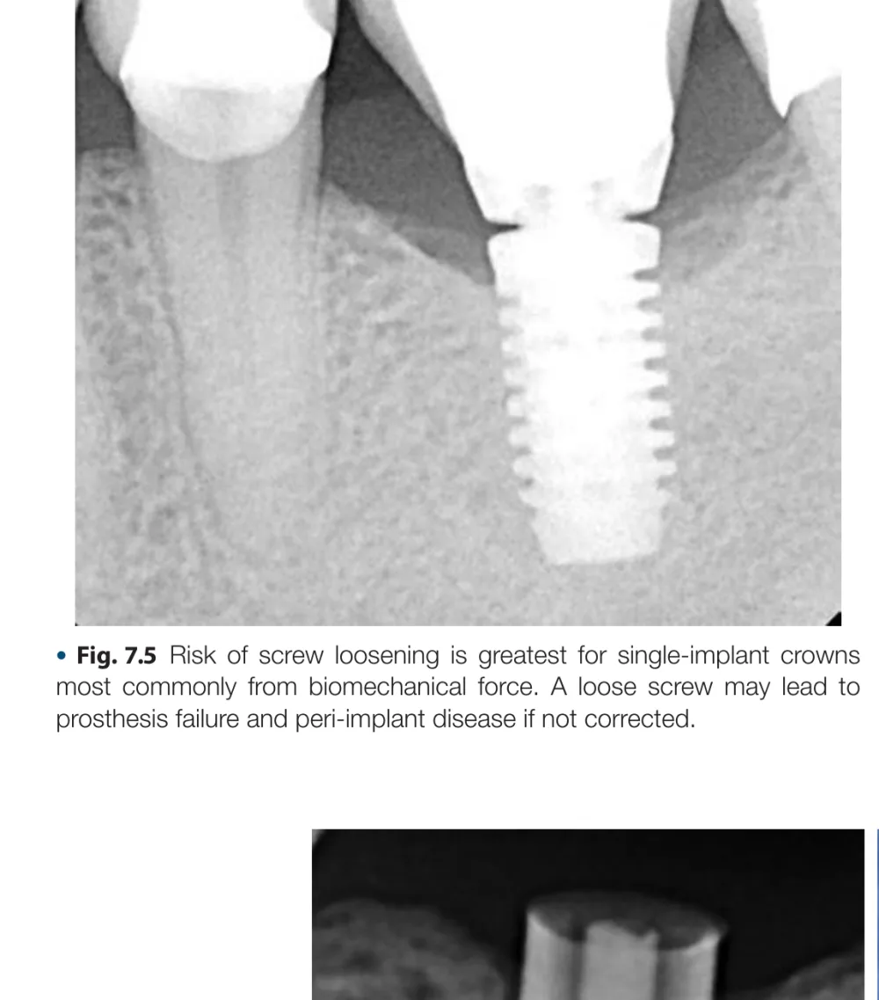
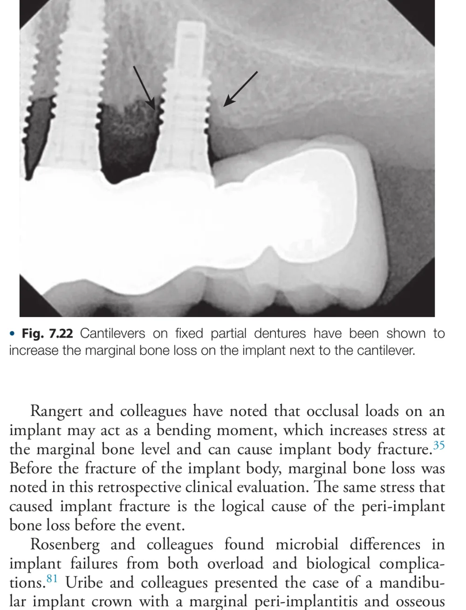

نسخه استخراجشده؛ ترجمه یا تأیید علمی انجام نشده است. وضعیت: captured
فهرست عوامل نیرو این است:
«عوامل نیروی متعددی برای در نظر گرفتن وجود دارد: (۱) براکسیسم، (۲) کلنچینگ، (۳) تراست زبان، (۴) فضای ارتفاع تاج، (۵) دینامیک جویدن، و (۶) قوس مقابل.»
همین عوامل را میتوان اینطور هم دستهبندی کرد: «این نیروهای بیرونی ممکن است از عوامل بسیاری ناشی شوند، از جمله پارافانکشن، ارتفاع بیشازحد تاج، دینامیک جویدن، موقعیت پروتز در قوس دندانی، و دندانهای مقابل.»
اما همهی این شش عامل هموزن نیستند — و اینجا نوآوری قضیه است.
برای سنجش، یک مقیاس خطر از ۱ تا ۱۰ به کار میرود:
«برای نمونه، براکسیسم شدید مهمترین عامل است و در مقیاس خطر ۱ تا ۱۰، یک ۱۰ است.»
«دومین عامل خطر بالا، کلنچینگ شدید است که در مقیاس خطر یک ۹ است.»
و ترتیب بقیه: «کانتیلورها، از جمله ارتفاع تاج، در فهرست بعدیاند، و پس از آن دینامیک عضلات جونده.»
پس رتبهبندی چنین است: براکسیسم شدید (۱۰) ← کلنچینگ شدید (۹) ← کانتیلور و ارتفاع تاج ← دینامیک عضلات جونده.
این اعداد نسبیاند نه مطلق، چون عوامل بر هم اثر میگذارند؛ برای نمونه، نیروی زاویهدار بیش از ۳۰ درجه نسبت به بدنهی ایمپلنت از ارتفاع تاج ۲۰ میلیمتری با بار محوری آسیبرسانتر است.
چرا براکسیسم بالاتر از همه است؟ پاسخ این است:
«بزرگی نیرو افزایش مییابد چون عضلات قویتر میشوند و شمار چرخهها روی اجزای پروتزی بهدلیل پارافانکشن بیشتر است.»
دو عامل همزمان: نیروی بزرگتر و چرخههای بیشتر. و از یونیت پیش میدانی که این دقیقاً دو تا از چهار عامل خستگیاند.
و پیامدها: «در نتیجهی این وضعیت، تحلیل استخوان مارجینال ایمپلنت، اباتمنتهای بدون گیر، و شکستهای خستگی ایمپلنت یا پروتز محتملترند.»
و صادقانهترین جملهی این بخش: «نیروهای ناشی از براکسیسم اغلب دشوارترین نیروها برای مقابله در بلندمدتاند.»
یعنی این عامل نهتنها قویترین است، سرسختترین هم هست.

ادعای «پارافانکشن مهمترین عامل است» به شواهد نیاز دارد. این هم شواهدش:
«در واقع، در مطالعهای روی ۵۸۹ ایمپلنت متوالی، پیشنهاد شد که اضافهبار ناشی از عادتهای پارافانکشنال ممکن است محتملترین علت از دست رفتن ایمپلنت و تحلیل استخوان مارجینال پس از بارگذاری باشد.»
«محتملترین علت» — نه یکی از علتها. و ۵۸۹ ایمپلنت متوالی یعنی نمونهای بدون گزینش.
و یک نکتهی دیگر: پارافانکشن حتی پیش از بارگذاری هم اثر دارد: «نبود فیکساسیون رژید در دورهی ترمیم، اغلب نتیجهی پارافانکشن از پروتزهای بافتمحور روی ایمپلنت مدفون است.»
یعنی پارافانکشن حتی وقتی ایمپلنت زیر بافت است، از راه پروتز موقت به آن میرسد — همان مسیری که در تخصص جراحی هم دیدی.
حالا تاریخچهی سنجش نیرو، که مقیاس مسئله را نشان میدهد:
«نیرویی برابر ۱۶۵ پوند روی گناتودینامومتر ثبت شد؛ گناتودینامومتر نخستین ابزار ثبت نیروی اکلوزالی بود که در سال ۱۸۹۲ ساخته شد.»
و نسخهی بهبودیافتهی همین ابزار نیروهای میانگین تقریباً ۱۷۰ پوند را ثبت کرد.
ولی هشدار: این اعداد را نباید سادهانگارانه به کار برد:
«حداکثر نیروی گاز با نیروی جویدن تفاوت دارد، میان افراد بهشدت متفاوت است، و به وضعیت دندانها و عضلات جونده بستگی دارد.»
سه قید در یک جمله — و همین است که چرا نمیتوان یک عدد واحد را معیار طراحی گرفت.
و حالا یافتهای که کل منطق «افزایش سطح» را توجیه میکند:
«دندانهای طبیعی در ناحیهی پرمولر و دوباره در ناحیهی مولر با افزایش مقدار نیرو، قطرشان افزایش مییابد، با یک افزایش کلی ۳۰۰ درصدی سطح از دندانهای قدامی پایین تا مولرهای ماگزیلا.»
سیصد درصد. طبیعت خودش دقیقاً همان کاری را کرده که قضیه توصیه میکند: هرجا نیرو بیشتر است، سطح را بزرگتر کن.
و این یک استدلال قدرتمند در گفتوگو با بیمار است: ایمپلنت مولر نباید هماندازهی ایمپلنت قدامی باشد، چون دندان مولر هم هماندازهی دندان قدامی نیست.
